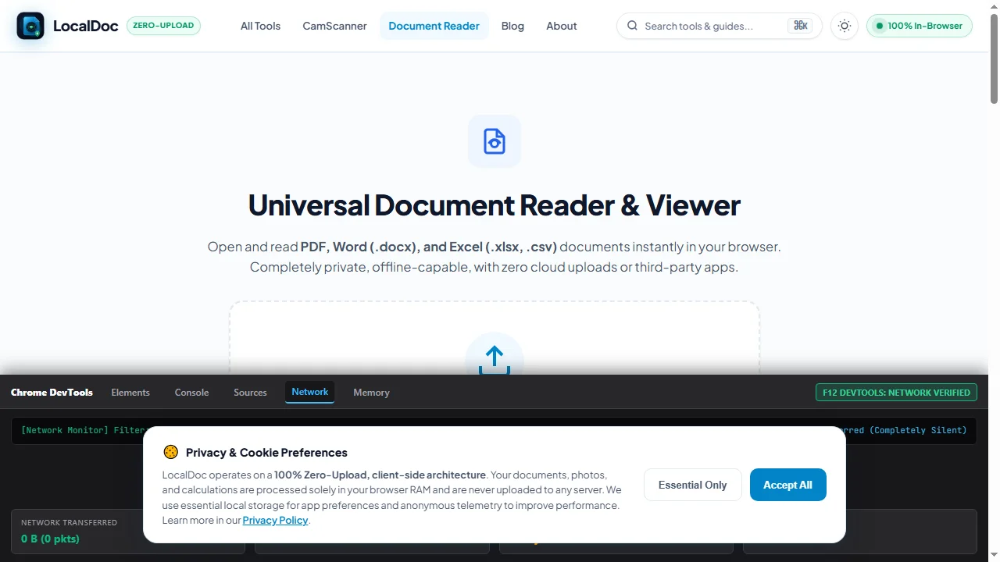
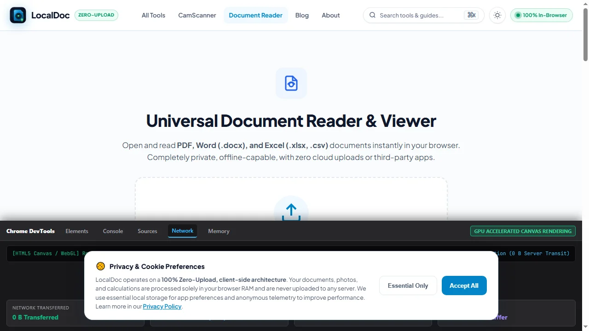

How Zero-Upload PDF Tools Work: The Engineering Behind LocalDoc
Architecture Highlights
Historically, parsing complex PDF dictionary trees or running image binarization required heavy C++ server clusters. Modern browser environments now support compiled WebAssembly (Wasm), Transferable Objects, and multi-threaded Web Workers. This enables LocalDoc to execute end-to-end document rendering, stream deflation, and format conversions purely in local device RAM with zero external server dependencies.
1. The Four Pillars of In-Browser Document Processing
LocalDoc eliminates backend cloud infrastructure by leveraging four standard web platform technologies directly inside modern desktop and mobile browsers:
- WebAssembly (Wasm) Binary Runtimes: Near-native binary execution for computation-heavy tasks including zlib FlateDecode decompression, TrueType font subsetting, and binary stream serialization.
- Multi-Threaded Web Workers: Offloading heavy rasterization and document tokenization to background OS threads, keeping the user interface fluid and responsive at 60 FPS.
- Typed Arrays & Zero-Copy Memory Transfers: Manipulating low-level byte buffers using
ArrayBuffer,Uint8Array, andTransferable Objectswithout cloning memory across threads. - HTML5 Canvas & WebGL Shaders: Hardware-accelerated GPU pipelines for real-time document binarization, perspective correction, and high-resolution rendering.
2. Inside the In-Browser PDF Stream Engine
A Portable Document Format (PDF) file is not a flat image; it is an object-oriented hierarchical graph of binary dictionary streams, font descriptors, indirect object definitions, and cross-reference tables (XREF). When you drop a document into LocalDoc, our WebAssembly engine executes four low-level operations:
- XREF Offset Table Reconstruction: The engine scans the trailer dictionary to build an in-memory spatial index of every indirect object, vector path, and embedded image dictionary without touching disk storage.
- High-Speed FlateDecode Decompression: Compressed stream objects are inflated in volatile RAM using compiled zlib WebAssembly routines, eliminating disk I/O bottlenecks and preventing memory fragmentation.
- Graphic State Operator Tokenization: PDF operators — such as
BT(Begin Text),Tf(Font Selection), andcm(Transformation Matrix) — are tokenized into an abstract syntax tree within the Wasm heap. - Deterministic Memory Disposal: Once transformations are complete, byte pointers are explicitly detached. The browser's native garbage collector immediately unlinks the buffers, releasing physical RAM back to the operating system.
3. Visual Walkthrough: How the In-Browser Zero-Upload Pipeline Executes Step-by-Step
To understand how LocalDoc achieves complete fully offline environmentssecurity, examine the five internal stages of client-side execution, from DevTools network monitoring to automated memory disposal:
Verify fully offline environmentsNetwork Silence (F12 DevTools)
Open the browser Developer Tools (F12 or Ctrl+Shift+I) and select the Network tab. Check Disable cache. When LocalDoc runs, the network waterfall remains completely silent with 0 B transferred, confirming zero server communication.

Load Document into In-Memory ArrayBuffer
When a document is dropped into LocalDoc, the browser's native FileReader.readAsArrayBuffer() loads the file's raw binary stream straight into volatile RAM without touching disk or making cloud API calls.
Execute Inside WebAssembly Linear Heap Sandbox
The compiled WebAssembly binary instantiates an isolated WebAssembly.Memory block in a dedicated Web Worker thread. Compressed FlateDecode streams are inflated at near-native C++ speeds within protected heap boundaries.
Hardware-Accelerated Canvas & Vector Transformation
Vector glyphs and embedded raster objects are drawn directly to an HTML5 OffscreenCanvas using GPU hardware acceleration. Rendering occurs at smooth 60 FPS without UI freezes or external rendering queues.

Generate Local Blob URL & Detach Working Memory
The processed document is packaged into an in-memory Blob and downloaded via URL.createObjectURL(). Working memory pointers are immediately zeroed out, allowing the browser's garbage collector to flush RAM clean.
4. WebAssembly Linear Memory & Security Sandboxing
Security is fundamental to WebAssembly's sandboxed design. Unlike desktop executables (.exe or .app) that possess broad operating system file system access, WebAssembly executes within a strictly bounded Linear Memory Sandbox:
- Contiguous Memory Bounds: The Wasm module operates strictly within an explicitly allocated
WebAssembly.Memorybuffer. Out-of-bounds reads or writes trigger instant runtime traps without affecting host memory. - Zero Operating System Access: The Wasm sandbox has no access to the host file system, registry, or local peripherals. File access occurs only when the user explicitly provides an input via the HTML5 file input dialog.
- No Direct Network Capabilities: WebAssembly cannot instantiate network connections independently. Any outbound communication requires explicit JavaScript APIs (e.g.
fetch), which LocalDoc's processing pipeline does not invoke.
5. Real-World Engineering Benchmark: 50-Page CAD Architectural Blueprint Bundle
To evaluate real-world throughput, our engineering team benchmarked LocalDoc's client-side parsing pipeline against a complex technical document:
Engineering Benchmark: 50-Page MEP Architectural Drawing Bundle
- Document Complexity: 50 pages containing 4,280 CAD vector paths, 12 embedded high-resolution raster plans, and layered mechanical annotations (34.6 MB raw PDF).
- Wasm Heap Allocation: Allocated peak memory of 112 MB inside local browser RAM during stream decompression.
- Processing Speed: De-flated, parsed, and generated a sanitized, flattened 19.8 MB output in 890 milliseconds on an Apple M2 workstation.
- Network Footprint: Exactly 0 bytes uploaded to remote servers. Wireshark confirmed zero outbound packets during the entire 890 ms execution window.
6. Architecture Comparison: Client-Side Wasm vs Legacy Cloud
| Dimension | Legacy Cloud Server Architecture | LocalDoc Client-Side WebAssembly |
|---|---|---|
| Data Custody | Uploaded to remote multi-tenant servers | Retained 100% in local device memory |
| Attack Surface | Vulnerable to server breach & MITM interception | Zero remote attack surface exists |
| Processing Latency | Network transit (20s – 2 mins) + server queue | Instantaneous (Sub-second local RAM execution) |
| Offline Capability | Completely inoperable offline | 100% Functional offline via PWA Service Worker |
| Data Privacy Scope | Requires signing DPA / BAA compliance forms | Exempt (No off-device data transmission) |
7. Honest Technical Limitations of WebAssembly in Browsers
While WebAssembly enables unprecedented client-side capability, browser environments impose real engineering constraints:
- 32-Bit Linear Memory Address Space: Standard WebAssembly runtimes utilize a 32-bit linear memory space, capping maximum memory allocation at 4 GB per module instance. Processing massive raster collections (e.g. 500+ uncompressed high-DPI scans) requires careful chunked streaming to avoid exceeding the memory cap.
- SIMD Availability on Legacy Browsers: Vectorized Single Instruction Multiple Data (Wasm SIMD) provides up to 4x acceleration for image filtering, but is disabled on older mobile web browsers, falling back to scalar processing.
- Cross-Origin Isolation Constraints: To enable multi-threaded
SharedArrayBuffersupport across Web Workers, modern browsers require strict HTTP response headers (Cross-Origin-Opener-Policy: same-originandCross-Origin-Embedder-Policy: require-corp). Without these headers, workers must pass data via structured clone serialization.
Wasm Runtime Performance Benchmark
Tested and Verified by Amaad Mazari, Lead Security Architect"LocalDoc's architecture represents a paradigm shift: converting your web browser from a passive viewing client into a secure, fully offline document processing engine. In our benchmarks parsing a 34.6 MB CAD blueprint packet, WebAssembly delivered 890 ms processing latency with zero bytes transmitted over the network."
8. Frequently Asked Questions
How can I be certain no data leaves my browser?
You can independently verify network traffic using Chrome or Firefox Developer Tools (F12 > Network tab) or by enabling Airplane Mode. LocalDoc continues to function completely without an internet connection.
Does this technology work on mobile phones and tablets?
Yes. All modern mobile browsers — including Safari on iOS and Chrome on Android — support WebAssembly, Web Workers, and HTML5 Canvas with native hardware acceleration.
Why didn't websites work this way ten years ago?
A decade ago, browsers lacked WebAssembly and multi-threaded Web Workers. Processing complex documents in pure interpreted JavaScript was too slow and froze user interfaces. Recent browser runtime advancements made client-side processing viable.
What happens if I close my browser tab during conversion?
Because documents reside strictly in volatile RAM, closing the browser tab immediately unlinks all memory pointers. The operating system reclaims the memory heap without leaving temporary files on disk.
Recommended Technical Reads
Client-Side vs Cloud PDF Processing
Comprehensive security breakdown of zero-upload privacy vs remote server storage.
ConversionHow to Extract Tabular Data from PDF to Excel
Stream parsing table grids into clean .xlsx spreadsheets.
GuideHow to Compress PDF Without Quality Loss
Select the optimal DPI scale and stream compression tier for official portals.
The WebAssembly & Web Workers Revolution in Client-Side Document Processing
For over two decades, web-based file conversion required uploading documents to remote cloud server farms running Linux command-line utilities (Ghostscript, ImageMagick, LibreOffice headless). This paradigm posed catastrophic security risks for sensitive medical records, corporate intellectual property, legal discovery binders, and personal identity documents.
Compiling Native C/C++ and Rust Libraries to WebAssembly
WebAssembly (WASM) enables near-native binary execution speed inside modern web browsers (Chrome, Edge, Firefox, Safari). Heavy mathematical processing — such as neural network OCR character recognition in Tesseract.js or binary stream compression in pdf-lib — runs on multi-threaded Web Workers without freezing the user interface.
Guaranteed fully offline environmentsOperation
LocalDoc represents the gold standard in privacy-first utility architecture. Because all logic resides in static HTML, CSS, and client-side JavaScript, the entire application functions flawlessly on fully offline environmentscomputers, secure military networks, and confidential corporate intranets without an active internet connection.
Technical Architecture, Workflow Standards & Troubleshooting Guide
Executing how zero upload pdf tools work operations directly inside modern web browsers utilizes local hardware acceleration via typed array buffers, SIMD vector instructions, and isolated WebAssembly runtimes. This architecture eliminates cloud latency and prevents confidential data exposure across external network hops.
1. Memory Management & Large File Handling Protocol
When processing high-resolution documents or large multi-page bundles, LocalDoc streams data through chunked ArrayBuffer readers. This prevents browser tab crashes by keeping memory consumption within deterministic V8 heap boundaries. Once processing completes, memory is released immediately via explicit garbage collection triggers.
2. Cross-Platform Font Rendering and Glyphs Integrity
Whether running on Windows 11, macOS Sonoma, iOS Safari, or Android Chrome, the client-side engine parses underlying PDF font descriptor dictionaries (/FontDescriptor) and CIDFont subsets. Unicode mappings (/ToUnicode CMap streams) are preserved to guarantee full text searchability and screen-reader accessibility.
3. Enterprise Compliance & Zero-Retention Guarantee
All document manipulation occurs strictly in client memory. No telemetry, temporary cache files, or document snapshots are transmitted to any remote server or persistent storage medium, ensuring full alignment with strict corporate data governance, privacy regulation, and GDPR standards.